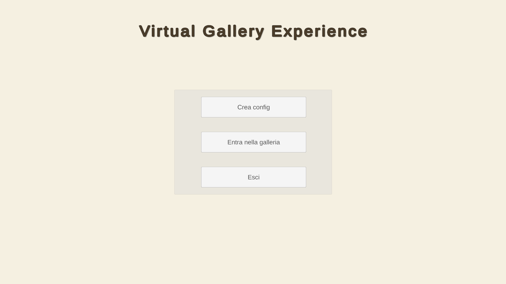
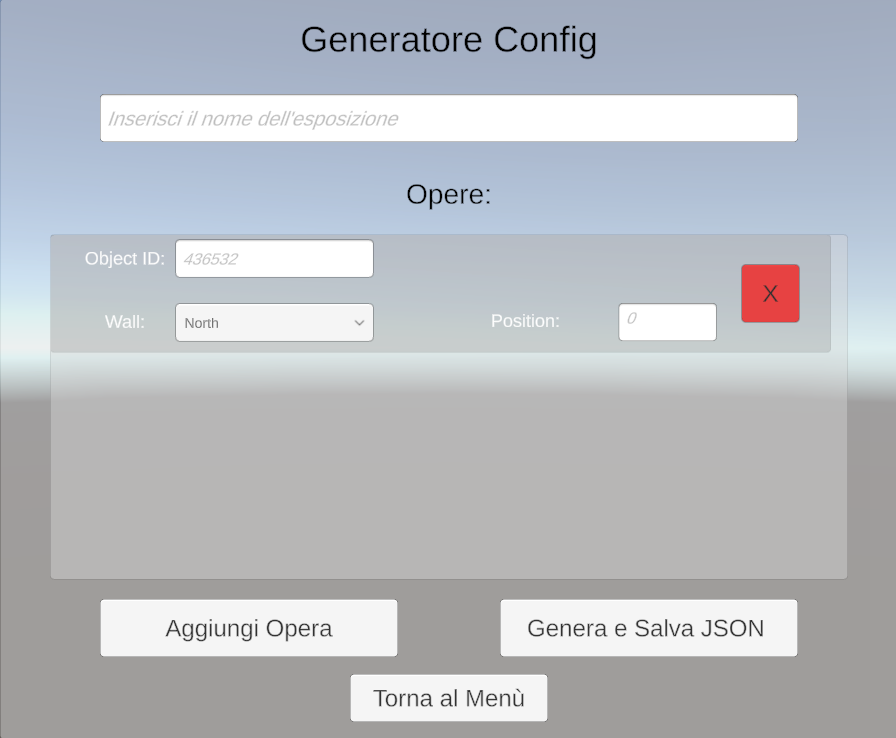
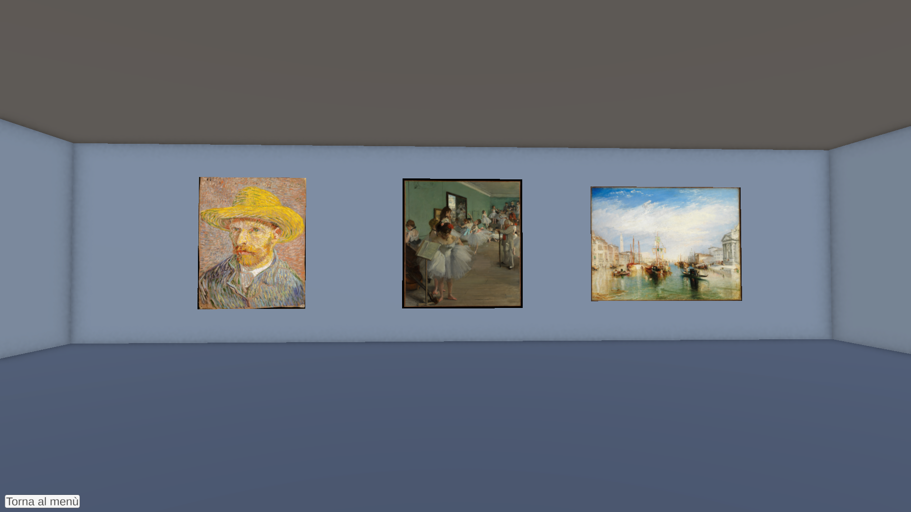
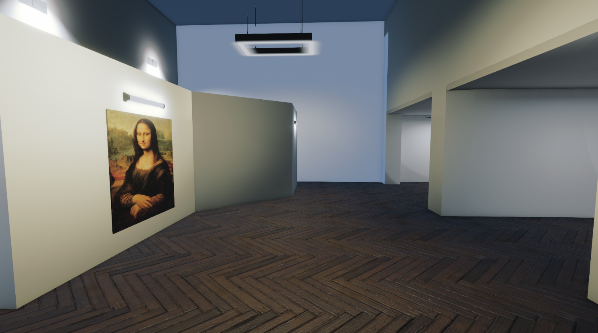
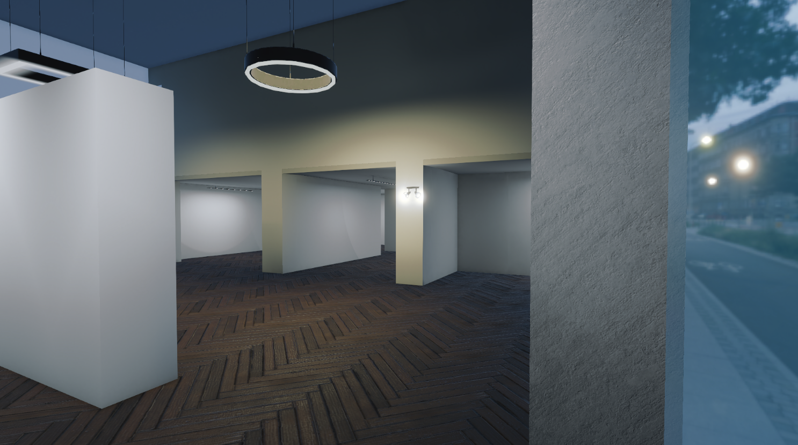

Applicazione interattiva sviluppata in Unity per esperienze museali con configuratore.
L'applicazione può essere utilizzata su qualsiasi dispositivo.
L’applicazione permette di creare e visitare gallerie d’arte tridimensionali in cui le opere vengono caricate dinamicamente
tramite le API pubbliche del Metropolitan Museum of Art di New York (“Met Museum” 2020).
Il programma invia richieste strutturate all’API del Met Museum, che restituisce i dati relativi alle opere richieste.
Questo sistema consente di mantenere i contenuti sempre aggiornati e di integrare nuove funzionalità senza modificare
l’architettura di base.
Le opere d’arte vengono scaricate in tempo reale e selezionate dal vastissimo database del Met Museum.
L’applicazione può così generare mostre sempre nuove, senza limiti di varietà.
L’editor grafico integrato, progettato anche per utenti non esperti, permette di selezionare le opere, posizionarle sulle pareti
virtuali e generare automaticamente i file di configurazione necessari. Le opere vengono collocate automaticamente sulle pareti in
proporzioni reali. Il sistema calcola dinamicamente l’aspect ratio di ogni quadro, garantendo una rappresentazione accurata e
coerente con le dimensioni originali.



L'ambiente dove vengono esposte le opere può essere modificato e personalizzato secondo richieste, un'esempio si può vedere con
questo ambiente.

